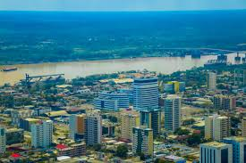

Rondônia, na Região Norte, tem cerca de 1,75 milhão de habitantes e 52 municípios, com Porto Velho como capital. Governado por Marcos Rocha, o estado possui uma economia forte, com crescimento expressivo no comércio, indústria e agropecuária, além de ser o segundo maior exportador da região. Rondônia também apresenta a menor taxa de desemprego do país e avanços em educação e saúde, refletidos em seu bom Índice de Desenvolvimento Humano.
